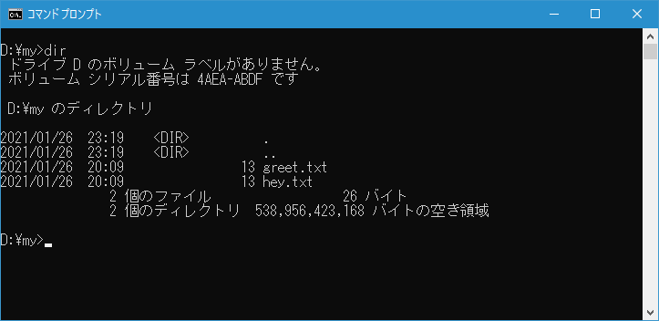

シンボリックリンクの作成(MKLINK)
ディレクトリやファイルに対するシンボリックリンクを作成することができる MKLINK コマンドの使い方について解説します。 MKLINK コマンドではシンボリックリンクの他に、ハードリンクやディレクトリジャンクションを作成することができます。
MKLINKコマンドの使い方
MKLINK コマンドを実行するとシンボリックリンクを作成することができます。書式は次の通りです。
MKLINK [[/D] | [/H] | [/J]] リンク ターゲット
オプションとして /D 、 /H 、 /J のいずれか一つを指定します。いずれも指定しなかった場合はファイルへのシンボリックリンクが作成されます。それぞれのオプションの意味は次の通りです。
/D ディレクトリへのシンボリックリンクを作成します /H ハードリンクを作成します /J ディレクトリジャンクションを作成します
リンクには作成するシンボリックリンクの名前、ターゲットには元になるファイルやディレクトリを指定します。
実際にシンボリックリンクを試す前に、リンクの対象となるディレクトリとファイルとして、 d:\tmp ディレクトリの中に data ディレクトリを作成し、その中に hello.txt ファイルを設置しました。
hello.txt ファイルには次の 1 行のテキストが記述されています。
ファイルへのシンボリックリンクを作成する
ファイルへのシンボリックリンクを作成します。シンボリックリンクの作成はコマンドプロンプトから行いますが、シンボリックリンクの場合は管理者権限でコマンドプロンプトを起動する必要があります。
コマンドプロンプトを起動したら、シンボリックリンクを作成するディレクトリへ移動します。今回は d:\my ディレクトリで行います。
ターゲットは d:\tmp\data\hello.txt で、作成するシンボリックリンクは hey.txt とします。コマンドプロンプトから次のように実行してください。
mklink hey.txt d:\tmp\data\hello.txt
ファイルへのシンボリックリンクが作成されました。シンボリックリンクを作成すると、現在のディレクトリに hey.txt が作成されます。 DIR コマンドを実行して確認してみると次のように表示されます。
作成されたファイルにはファイルのシンボリックリンクを表す <SYMLINK> が表示されます。またリンク先として [d:\tmp\data\hello.txt] が表示されます。
<SYMLINK> hey.txt [d:\tmp\data\hello.txt]
ファイルへのシンボリックリンクを作成すると、あたかもリンク先のファイルがあるように扱うことができます。例えば TYPE コマンドを使って hey.txt の内容を表示してみると、 hello.txt の内容が出力されます。

相対パスと絶対パス
シンボリックファイルを作成するときは、ターゲットのファイルを絶対パスではなく現在のディレクトリからの相対パスで指定することもできます。先ほどと同じターゲットに対して今度は次のように実行してみてください。
mklink greet.txt ..\tmp\data\hello.txt
新しいシンボリックリンクが作成されました。 DIR コマンドで作成されたシンボリックリンクを確認すると次のように表示されます。

最初に作成したシンボリックリンクは絶対パスでリンク先の情報を保持していますが、新しく作ったシンボリックリンクは相対パスでリンク先の情報を保持しています。
<SYMLINK> greet.txt [..\tmp\data\hello.txt] <SYMLINK> hey.txt [d:\tmp\data\hello.txt]
相対パスでターゲットを指定して作成したシンボリックリンクは、別のディレクトリに移動した場合、新しいディレクトリからの相対パスが示すファイルへのシンボリックリンクが設定されることになります。絶対パスで指定した作成したシンボリックリンクは、別のディレクトリに移動してもターゲットは同じままです。
ターゲットのファイルが削除された場合
シンボリックリンクとターゲットの関係は次のようになっています。
ターゲットのファイルが削除された場合、シンボリックリンクが削除されてしまうことはありませんが、シンボリックリンクは実際のデータへアクセスすることができなくなります。実際にターゲットのファイルを削除したあとで、シンボリックリンクに対して TYPE コマンドを実行すると「指定されたファイルが見つかりません」と表示されます。
ディレクトリへのシンボリックリンクを作成する
ディレクトリのシンボリックリンクを作成します。管理者権限でコマンドプロンプトを起動したら、シンボリックリンクを作成するディレクトリへ移動します。今回は d:\my ディレクトリで行います。
ターゲットは d:\tmp\data で、作成するシンボリックリンクは box とします。コマンドプロンプトから次のように実行してください。
mklink /D box d:\tmp\data
ディレクトリへのシンボリックリンクが作成されました。シンボリックリンクを作成すると、現在のディレクトリに box が作成されます。 DIR コマンドを実行して確認してみると次のように表示されます。
作成されたディレクトリにはディレクトリのシンボリックリンクを表す <SYMLINKD> が表示されます。またリンク先として [d:\tmp\data] が表示されます。
&t;SYMLINKD> box [d:\tmp\data]
ディレクトリへのシンボリックリンクを作成すると、あたかもリンク先のディレクトリがあるように扱うことができます。例えば CD コマンドを使って box ディレクトリへ移動してみます。
box ディレクトリはターゲットである d:\tmp\data ディレクトリへ移動したのと同じ扱いになります。 DIR コマンドを実行してみると d:\tmp\data ディレクトリに含まれているファイルの一覧が表示されます。またファイルに対して TYPE コマンドを実行して内容を確認することもできます。
相対パスと絶対パス
ディレクトリへのシンボリックファイルを作成するときも、ターゲットのファイルを絶対パスではなく現在のディレクトリからの相対パスで指定することもできます。先ほどと同じターゲットに対して今度は次のように実行してみてください。
mklink /D space ..\tmp\data
新しいシンボリックリンクが作成されました。 DIR コマンドで作成されたシンボリックリンクを確認すると次のように表示されます。
最初に作成したシンボリックリンクは絶対パスでリンク先の情報を保持していますが、新しく作ったシンボリックリンクは相対パスでリンク先の情報を保持しています。
&t;SYMLINKD> box [d:\tmp\data] &t;SYMLINKD> space [..\tmp\data]
相対パスでターゲットを指定して作成したシンボリックリンクは、別のディレクトリに移動した場合、新しいディレクトリからの相対パスが示すディレクトリへのシンボリックリンクが設定されることになります。絶対パスで指定した作成したシンボリックリンクは、別のディレクトリに移動してもターゲットは同じままです。
ディレクトリジャンクションを作成する
ディレクトリジャンクションを作成します。ディレクトリジャンクションはディレクトリへのリンクのみ作成できます。シンボリックリンクの作成には管理者権限が必要でしたが、ディレクトリジャンクションの作成には管理者権限は不要です。通常のコマンドプロンプトを起動したら、ディレクトリジャンクションを作成するディレクトリへ移動します。今回は d:\my ディレクトリで行います。
ターゲットは d:\tmp\data で、作成するシンボリックリンクは box とします。コマンドプロンプトから次のように実行してください。
mklink /J box d:\tmp\data
ディレクトリジャンクションが作成されました。ディレクトリジャンクションを作成すると、現在のディレクトリに box が作成されます。 DIR コマンドを実行して確認してみると次のように表示されます。

作成されたディレクトリにはディレクトリジャンクションを表す <JUNCTION> が表示されます。またリンク先として [d:\tmp\data] が表示されます。
<JUNCTION> box [d:\tmp\data]
ディレクトリジャンクションを作成すると、あたかもリンク先のディレクトリがあるように扱うことができます。例えば CD コマンドを使って box ディレクトリへ移動してみます。
box ディレクトリはターゲットである d:\tmp\data ディレクトリへ移動したのと同じ扱いになります。 DIR コマンドを実行してみると d:\tmp\data ディレクトリに含まれているファイルの一覧が表示されます。またファイルに対して TYPE コマンドを実行して内容を確認することもできます。
相対パスと絶対パス
ディレクトリジャンクションを作成するときも、ターゲットのファイルを絶対パスではなく現在のディレクトリからの相対パスで指定することもできます。ただシンボリックリンクとは異なり、相対パスが絶対パスに変換された上でディレクトリジャンクションが作成されます。先ほどと同じターゲットに対して今度は次のように実行してみてください。
mklink /J space ..\tmp\data
新しいディレクトリジャンクションが作成されました。 DIR コマンドで作成されたディレクトリジャンクションを確認すると次のように表示されます。
相対パスを指定して作成したディレクトリジャンクションも、絶対パスで指定したのと同じように絶対パスでリンク先の情報を保持しています。
ハードリンクを作成する
ハードリンクを作成します。ハードリンクはファイルへのリンクのみ作成できます。シンボリックリンクの作成には管理者権限が必要でしたが、ハードリンクの作成には管理者権限は不要です。通常のコマンドプロンプトを起動したら、ハードリンクを作成するディレクトリへ移動します。今回は d:\my ディレクトリで行います。

ターゲットは d:\tmp\data\hello.txt で、作成するハードリンクは hey.txt とします。コマンドプロンプトから次のように実行してください。
mklink /H hey.txt d:\tmp\data\hello.txt
ファイルへのハードリンクが作成されました。ハードリンクを作成すると、現在のディレクトリに hey.txt が作成されます。 DIR コマンドを実行して確認してみると次のように表示されます。
作成されたファイルにはシンボリックリンクやディレクトリジャンクションのように識別子のようなものは表示されていません。通常のファイルと同じように表示されています。リンク先も表示されていません。
hey.txt
ファイルへのハードリンクを作成すると、リンク先のファイルの実際のデータに直接リンクされます。
そのため、ハードリンクで作成されたファイルは、リンク先のファイルと同じデータを共有する通常のファイルとして作成されます。例えば TYPE コマンドを使って hey.txt の内容を表示してみると、 hey.txt が保持しているデータが出力されます。

相対パスと絶対パス
ハードリンクを作成するときは、ターゲットのファイルを絶対パスではなく現在のディレクトリからの相対パスで指定することもできます。先ほどと同じターゲットに対して今度は次のように実行してみてください。
mklink /H greet.txt ..\tmp\data\hello.txt
新しいハードリンクが作成されました。 DIR コマンドで作成されたシンボリックリンクを確認すると次のように表示されます。

ハードリンクの場合は絶対パスか相対パスかによって違いはありません。
ターゲットのファイルが削除された場合
ハードリンクの場合、ターゲットファイルに対してリンクされているのではなく、ターゲットファイルの実際のデータに直接リンクされているため、ターゲットのファイルが削除された場合でも引き続きデータへアクセスすることができます。
実際にターゲットのファイルを削除したあとで、ハードリンクに対して TYPE コマンドを実行すると問題なくデータを表示します。
-- --
MKLINK コマンドを使ってシンボリックリンクを作成する方法について解説しました。
( Written by Tatsuo Ikura )

著者 / TATSUO IKURA
初心者～中級者の方を対象としたプログラミング方法や開発環境の構築の解説を行うサイトの運営を行っています。